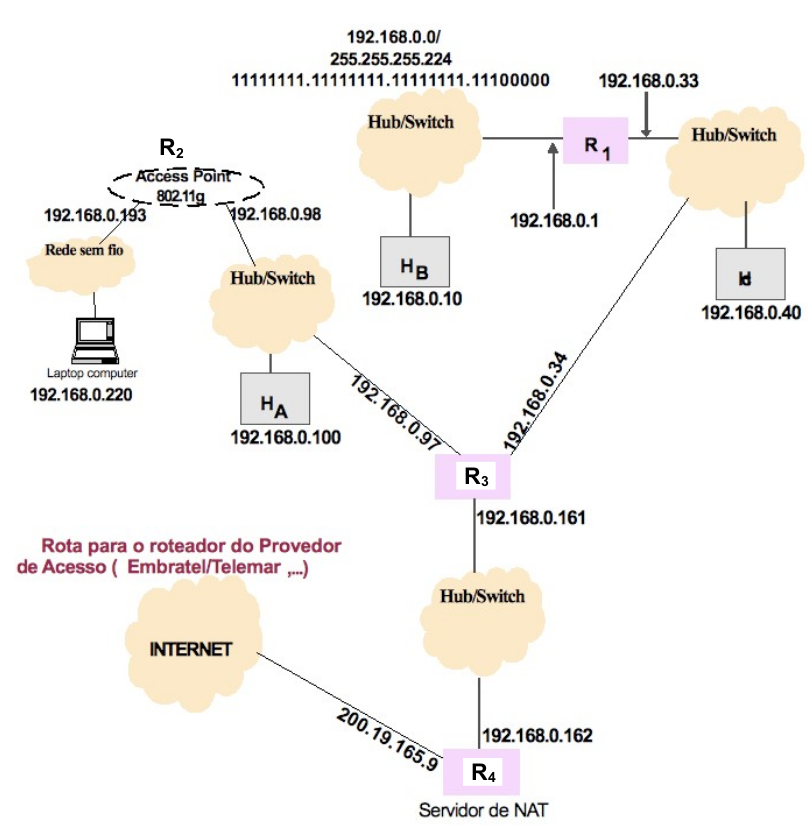

Considere a seguinte configuração de rede, ilustrada na figura.

A figura indica os endereços IP dos roteadores para cada uma das interfaces de rede, assim como o endereço IP de cada estação. O roteador default da rede externa (provedor) onde R4 está conectado possui o endereço 200.19.165.3.
Para auxiliar na resolução desse problema, utilize o conversor binário-decimal-binário abaixo.
| Binário | Decimal |
|---|---|